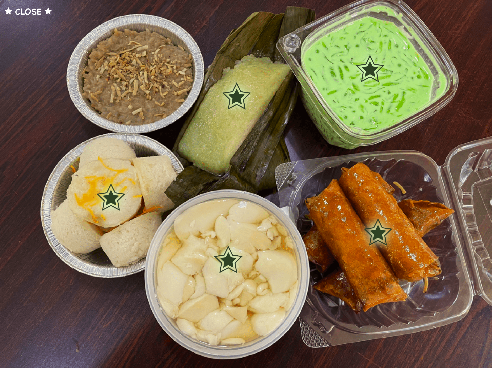

Suman
Suman is a sticky rice dessert. It is prepared by steaming the rice in a banana leaf. It has a nice mild flavor
Buko Pandan
Buko Pandan is a coconut based dessert. There are many different mix-ins of jello, coconut shreds and nata de coco. It's often colored green with padan leaf flavoring.
Turon
Turon is a crunchy dessert that is a banana with jack fruit wrapped in a lumpia wrapper and fried. It is coated in a sweet sugar syrup for the glossy look
Puto
Puto is a steamed rice cake dessert. It is made out of rice flour, coconut milk and sugar. It's steamed for the texture to be nice and chewy.
Taho
Taho is a silken tofu dessert. It is often served hot with a thick sugar syrup and boba balls. I enjoy eating it on a cold winter day to warm up!